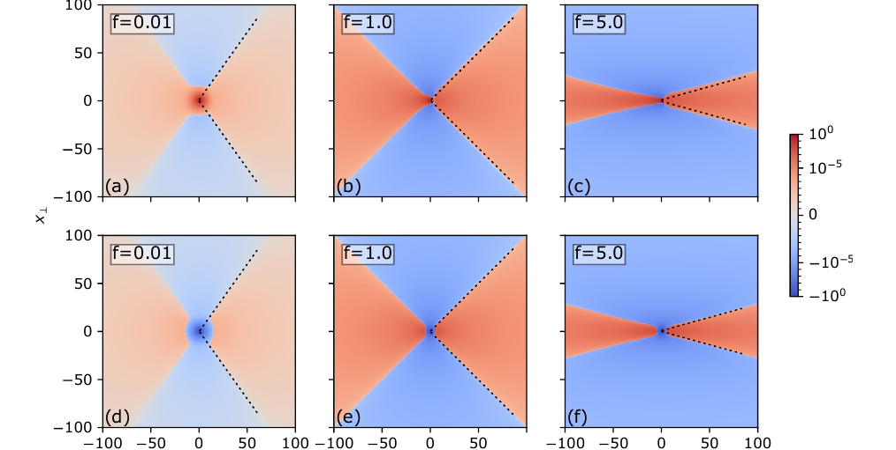

Home
I am a theoretical physicist working on non-equilibrium statistical physics, stochastic processes, and soft matter. I use analytical models and scientific computing to understand collective behavior in interacting systems.
My research has covered ionic transport and correlations in electrolytes, the glass transition in polymer films, granular flows, and the structure of random networks.

I received my PhD in Physics from Université PSL at ESPCI Paris, in the Gulliver Laboratory, and subsequently carried out postdoctoral research at Tel Aviv University and IPhT Saclay.
I am interested in research opportunities in academia and industry.
Outside research, I am an avid climber and an alpine rock climbing guide certified by the ILCA.